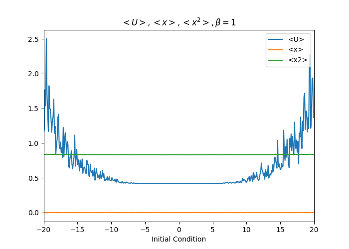
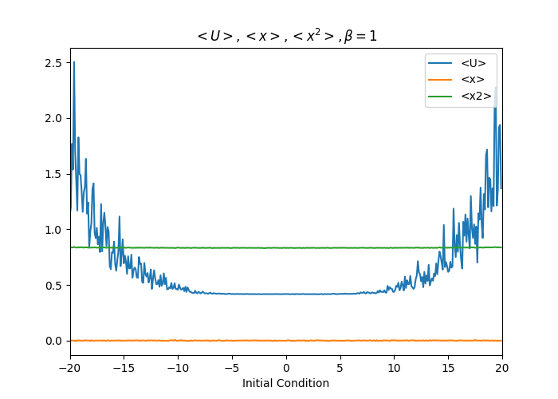

(25 points) In this problem, you will use Monte Carlo simulations to study the properties of the single oscillators from HW#2, which had potential energies (i)\(U=x^2/2\) and (ii)\(U=x^4-2x^2+1\)
(a) Determine \(<U>\), \(<x>\), and \(<x^2>\) for \(\beta=0.1, 1, 5\ and\ 10\) for oscillator (i) by directly evaluating the appropriate integrals (either analytically or numerically).
(b) Write a C++ code that uses the Metropolis Monte Carlo algorithm to compute \(<U>\), \(<x>\), and \(<x^2>\) for \(\beta=0.1, 1, 5\ and\ 10\) for oscillator (i). Discuss the following: How did you specify the trial move? How did you specify the maximum step size? How did you specify the initial condition and does it matter? How many trial moves do you need to get convergence of \(<U>\), \(<x>\), and \(<x^2>\)
(c) Present all of your direct evaluation and Monte Carlo results in a single table and compare them.
(d) Compare your results to the behavior you observed in HW#2.
(e) Repeats part (a)-(d) for oscillator (ii).
Answer:
(a) The probability of the mass point shows on position x:
\[\begin{align} P&=\frac{exp(-\beta U)}{\int_{-\infty}^{\infty}exp(-\beta U)dx}\\ \end{align}\]
For \(U\):
\[<U>=\int_{-\infty}^{\infty}UPdx=\frac{\int_{-\infty}^{\infty}x^2/2exp(-\beta U)dx}{\int_{-\infty}^{\infty}exp(-\beta U)dx}\]
For \(x\):
\[<x>=\int_{-\infty}^{\infty}xPdx=\frac{\int_{-\infty}^{\infty}xexp(-\beta U)dx}{\int_{-\infty}^{\infty}exp(-\beta U)dx}\]
For \(x^2\):
\[<x^2>=\int_{-\infty}^{\infty}x^2Pdx=\frac{\int_{-\infty}^{\infty}x^2exp(-\beta U)dx}{\int_{-\infty}^{\infty}exp(-\beta U)dx}\]
I used the numerical method to calculate these integrals, the detailed program is saved in ./1/1a/1a.cpp. To modify the specific oscillator, change the Potential function to get the results.
- For oscillator(i): \(U=x^2/2\)
\[\begin{array}{c|c} & \beta=0.1 & \beta=1 & \beta=5 & \beta=10 \\ \hline <U> & 5.00 & 0.50 & 0.10 & 0.05 \\ <x> & 0 & 0 & 0 & 0 \\ <x^2> & 10.00 & 1.00 & 0.20 & 0.10\\ \end{array}\]
- For oscillator(ii): \(U=x^4-2x^2+1\)
\[\begin{array}{c|c} & \beta=0.1 & \beta=1 & \beta=5 & \beta=10 \\ \hline <U> & 2.10418 & 0.417255 & 0.113166 & 0.0524772\\ <x> & 0 & 0 & 0 & 0\\ <x^2> & 1.39582 & 0.832745 & 0.936834 & 0.972523\\ \end{array}\]
(b)
The detailed basid codes are saved in ./1/1b/1b.cpp.
To get the data various with maximum trial moves, maximun step size, initial conditions and to determine how many trial moves is needed for \(<U>\), \(<x>\), \(<x^2>\)to converge, I developed some other algorithms saved in the ./1/1b floder. Using circulation wrt to "TRIALMAX, "STEP", "X0" to get the plot below:
For oscillator(i): \(U=x^2/2\)
Maximum trial moves size
To consider the maximum trial moves size, I chose the other parameters as: \(STEP=100,000\), \(X0=0\). Plot the \(<U>, <x>, <x^2>\) with different \(\beta\) as below:


From the graphs shown above, the maximum trial moves size value should not be either too large nor too small. If the maximum tiral moves size value is too small, it will need a larger "STEP" to generate a equilibrium system, which means the cost of computational resources will be expensive. If the maximum tiral moves size value is too large, the fluctuation of \(<U>\), \(<x>\) and \(<x^2>\) will be very large. For grater \(\beta\) value, the appropriate maximum trial move size value is smaller. As we can see from the graphs the choice of \(Trial_{max}\):
\[\begin{array}{c|c} & \beta=0.1 & \beta=1 & \beta=5 & \beta=10 \\ \hline Trial_{max} & 5 & 3 & 2 & 1\\ \end{array}\]
Maximum step
To consider the maximum step, the other parameters: \(Trial_{max}=1\), \(X0=0\). Plot the \(<U>, <x>, <x^2>\) with different \(\beta\) as below:


From the graphs shown above, the larger maximum ste will give us a better convergence of values \(<U>\), \(<x>\), \(<x^2>\). Therefore, inspite of the cost of computational resources, larger maximum ste is preferred. However, in these cases, I'll choose maximum step to be 1,000,000.
Initial condition
To consider the maximum step size, the other parameters: \(Trial_{max}\) varies with \(\beta\)(see Maximum trial move size section), \(STEP=1,000,000\). Plot the \(<U>, <x>, <x^2>\) with different \(\beta\) as below:


From the graphs shown above, the initial position should be chosen around 0 for all cases
For oscillator(ii): \(U=x^4-2x^2+1\)
- Maximum trial moves size
To consider the maximum trial moves size, I chose the other parameters as: \(STEP=100,000\), \(X0=0\). Plot the \(<U>, <x>, <x^2>\) - \(Trial_{max}\) with different \(\beta\) as below:


From the graphs shown above, the maximum trial moves size value have the same trend as the oscillator(i). However, when the \(\beta\) is large, small value of trial moves size will lead to a local equilibrium instead of a global equilibrium, i.e. \(<x>=0\) or \(<x>=-1\). Though the potential energy and \(<x^2>\) value seem no difference with the global equilibrium, it is because the potential energy function is an evne function. Only taking the positive string part or the negative string part will produce the same equilibrium energy state as the whole equilibrium energy state. In this oscillator(ii) case I'll choose maximum trial move size as 2.5 for most of the cases.
\[\begin{array}{c|c} & \beta=0.1 & \beta=1 & \beta=5 & \beta=10 \\ \hline Trial_{max} & 2.5 & 2.5 & 2.5 & 2.5\\ \end{array}\]
Maximum step
To consider the maximum step, the other parameters: \(Trial_{max}=2.5\)(explained above), \(X0=0\). Plot the \(<U>, <x>, <x^2>\) with different \(\beta\) as below:


(*Note: When I firstly choose \(Trial_{max}=1\), the \(<x>\) vs STEP cannot converge even with a maximum step value of 10,000,000 when \(\beta=10\). It can be explained on the graph shown in section "Maximum trial moves size" when \(\beta=10\), \(Trial_{max}=1\), the distribution of \(<x>\) is not converged.)
Therefore, when the \(Trial_{max}\) is specified as 2.5, I'll choose the maximum step to be 200,000.
Initial condition
To consider the maximum step size, the other parameters: \(Trial_{max}=2.5\), \(STEP=200,000\). Plot the \(<U>, <x>, <x^2>\) with different \(\beta\) as below:
 

From the graphs shown above, the initial position should be chosen around 0 for all cases.
(c)
For oscillator(i): \(U=x^2/2\)
Parameters set:
\[X_0=0,\ STEP=200,000\]
Put those parameters into the program ./1/1b/basic/1b.cpp to get the final \(<U>\), \(<x>\), \(<x^2>\) value with different \(\beta\)
\[\begin{array}{c|c} & \beta=0.1 & \beta=1 & \beta=5 & \beta=10 \\ \hline Trial_{max} & 5 & 3 & 2 & 1\\ <U>_{MC} & 5.00472 & 0.499212 & 0.100305 & 0.0498353 \\ <x>_{MC} & -0.01133 & -0.000819 & -0.000670 0 & -0.000414 \\ <x^2>_{MC} & 10.00940 & 0.998423 & 0.200609 & 0.0996707\\ \hline <U>_{evaluation} & 5.00 & 0.50 & 0.10 & 0.05 \\ <x>_{evaluation} & 0 & 0 & 0 & 0 \\ <x^2>_{evaluation} & 10.00 & 1.00 & 0.20 & 0.10\\ \end{array}\]
The results are quite similar with the direct evaluation results.
For oscillator(ii): \(U=x^4-2x^2+1\)
Parameters set:
\[X_0=0,\ STEP=200,000,\ Trial_{max}=1.0\]
Put those parameters into the program ./1/1b/basic/1b.cpp to get the final \(<U>\), \(<x>\), \(<x^2>\) value with different \(\beta\)
\[\begin{array}{c|c} & \beta=0.1 & \beta=1 & \beta=5 & \beta=10 \\ \hline <U>_{MC} & 2.10111 & 0.416810 & 0.112758 & 0.0524263 \\ <x>_{MC} & -0.001741 & -0.001055 & -0.000867 & 0.004530 \\ <x^2>_{MC} & 1.39717 & 0.833569 & 0.937159 & 0.971401\\ \hline <U>_{evaluation} & 2.10418 & 0.417255 & 0.113166 & 0.0524772\\ <x>_{evaluation} & 0 & 0 & 0 & 0\\ <x^2>_{evaluation} & 1.39582 & 0.832745 & 0.936834 & 0.972523\\ \end{array}\]
The results are quite similar with the direct evaluation results.
(d)
In HW2, the oscillator's motion is determined by the energy flow between the potential energy and the kinetic energy. In MC simulation, the potential energy is determined by the value of \(\beta\). From the graphs shown below, a bigger value of \(\beta\) will lead to a smaller range of position distribution, i.e. lower potential maximum bound in these two case.
For oscillator(i): \(U=x^2/2\)

For oscillator(ii): \(U=x^4-2x^2+1\)
(*Note: Since the maximum trial move value are different in all cases, when \(\beta=10\), if the \(Trial_{max}=1\), I'll only get the positive half or the negative half of the graph. Maybe adjusting maximum step value can get a better result. However, when I choose \(Trial_{max}=2.5\), I can get the same output as the HW2.)


(25 points) Consider a two-particle system, where each particle can be in one of two states. The potential energy is \(U = U_1 + U_2 + U_1U_2\), where \(U_1\) and \(U_2\) are the potential energies of the two particles and can take on values of \(\gamma\) or \(\mu\).
(a) List all microstates of this system. Develop an expression for \(<U>\) in terms of \(\beta\), \(\gamma\), and \(\mu\).
(b) For \(\gamma = 0\) and \(\mu = 1\), plot \(<U>\) vs. \(\beta\) for \(0.01 ≤ \beta ≤ 100\). Make the \(\beta\) axis logarithmic. Interpret the limit of \(<U>\) as \(\beta → 0\) from a physical perspective.
(c) Write a C++ code that uses Metropolis Monte Carlo algorithm to compute \(<U>\). Discuss the following: How did you specify the trial move? How did you specify the initial condition and does it matter?
(d) For \(\gamma=0\) and \(\mu=1\), plot \(<U>\) from your MC code vs. \(\beta\) on the same graph as (b) for \(\beta=0.01, 0.1, 1, 10\ and\ 100\). Present all the data from (b) (for appropriate \(\beta\)) and the MC simulations in a single table. Discuss the following: How many trial moves do you need to get convergence of \(<U>\)? How do the results compare to those from (b)?
Answer:
(a)
\[\begin{array}{c|c} & U_1 & U_2 & U=U_1+U_2+U_1U_2 & exp(-\beta U) \\ \hline State1 & \gamma & \gamma & 2\gamma+\gamma^2 & exp(-\beta(2\gamma+\gamma^2)) \\ State2 & \gamma & \mu & \gamma+\mu+\gamma\mu & exp(-\beta(\gamma+\mu+\gamma\mu)) \\ State3 & \mu & \gamma & \mu+\gamma+\mu\gamma & exp(-\beta(\mu+\gamma+\mu\gamma)) \\ State4 & \mu & \mu & 2\mu+\mu^2 & exp(-\beta(2\mu+\mu^2)) \\ \end{array}\]
Therefore, \(<U>\) in terms of \(\beta\), \(\gamma\) and \(\mu\):
\[<U>=\sum U_{state}P_{state}\]
\[=\frac{(2\gamma+\gamma^2)exp(-\beta(2\gamma+\gamma^2))+2(\gamma+\mu+\gamma\mu)exp(-\beta(\gamma+\mu+\gamma\mu)+(2\mu+\mu^2))exp(-\beta(2\mu+\mu^2))}{exp(-\beta(2\gamma+\gamma^2))+2exp(-\beta(\gamma+\mu+\gamma\mu))+exp(-\beta(2\mu+\mu^2))}\]
(b)
Given \(\gamma=0\) and \(\mu=1\),
\[\begin{align} <U>&=\sum U_{state}P_{state}\\ &=\frac{0\times exp(0)+2\times exp(-\beta)+3\times exp(-3\beta)}{exp(0)+2exp(-\beta)+exp(-3\beta)}\\ &=\frac{2exp(-\beta)+3exp(-3\beta)}{1+2exp(-\beta)+exp(-3\beta)} \end{align}\]
Plot \(<U>\) vs \(log(\beta)\):
From the graphs shown above, we can get the infomation that the ensembled-averaged potential \(<U>\) will decrease as \(\beta\) increase. It is because that the \(\beta=1/(k_BT)\). When \(\beta\) is approaching 0, i.e. the temperature is extremely high, particles are given high level of kinetic energy thus all the microstates are avaliable equally. The ensembled-averaged potential energy \(<U>=(0+1+1+3)/4=1.25\).
It is revealed in the graph shown above, too. When \(\beta\) approach 0, the intersection of U is around 1.25.
(c)
How did you specify the trial move?
- The trial move in this case mean a move from one microstate to another microstate(including itself). Each trial has a same probability 0.25.
How did you specify the initial condition and does it matter?
- The initial condition does not matter at all.
The MC codes are saved in ./2/2c.cpp
(d)
To specify how many trial moves I need to congerge \(<U>\), I plot the \(<U>\) vs Step graph with different given \(\beta\) value:


As shown above, choosing trial move steps to be \(2\times 10^6\) will be ensure the convergence of \(<U>\)
Comparison between analytical results and MC simulation results of \(<U>\)
\[\begin{array}{c|c} & \beta=0.01 & \beta=0.1 & \beta=1 & \beta=10 & \beta=100\\ \hline <U>_{MC} & 1.23837 & 1.13503 & 0.49400 & 9.25\times 10^{-5} & 0 \\ <U>_{evaluation} & 1.23817 & 1.13565 & 0.495714 & 9.07916\times 10^{-5} & 7.4476\times 10^{-44} \\ \end{array}\]
The MC simultaion results are quite similar with the direct evaluation results.
Plot the \(<U>\) with \(\beta = 0.01, 0.1, 1, 10, 100\) on the same graph with analytical results: